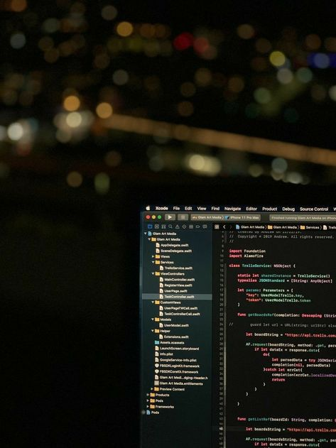

Lehem Temesgen
Welcome to my personal website, where I share my ongoing journey in tech. Feel free to explore the options below to learn more about me, my work, and my background!
👋🏾 Hi! I'm Lehem, a fourth-year Software Engineering student at Carleton University with interests in cybersecurity, artificial intelligence, and software development. Through my coursework and capstone project, Neural Shield, I'm continuing to develop my technical skills while exploring opportunities to gain hands-on experience.
A selection of my software engineering projects, highlighting my experience in machine learning, concurrent systems, and database development.
Python · PyTorch · Git
A modular platform for evaluating the robustness of a neural network image classifier against adversarial attacks and exploring defense mechanisms. The project uses a Multilayer Perceptron (MLP) trained with the Fashion-MNIST dataset.
My Contributions: Implemented the MLP architecture using PyTorch, developed model configuration and initialization utilities, and created smoke tests for model validation. Upcoming work includes implementing and evaluating Square Attack, a query-based black-box adversarial attack.
In Progress · Academic Capstone Project (SYSC 4907)
Java · Swing · UDP · JUnit · Git
A real-time concurrent simulation designed to coordinate drone and scheduler operations across three subsystems using UDP communication. The project explores distributed communication, concurrency, and system reliability.
My Contributions: Implemented finite state machines to manage drone and scheduler thread behaviour, integrated UDP communication between subsystems, and developed time-based fault detection logic and JUnit tests to evaluate reliability under failure scenarios.
Completed · Academic Group Project
Python · PostgreSQL · psycopg2
A Python-based application using a PostgreSQL relational database to organize and manage member, trainer, and administrative information. The system supports data retrieval and reporting through SQL queries.
My Contributions: Developed the Python application and database functionality, including SQL queries to retrieve, organize, and aggregate information for reporting and dashboard-style outputs.
Completed · Academic Project
👩🏾💻 Technical Skills
🤝 Extracurricular Involvement
